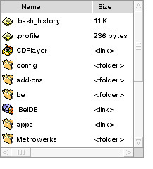
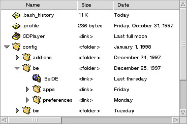

By Brian Tietz
Copyright 1997-2000
Bug reports (including documentation errors) and feature requests can be sent to briant@timelinevista.com.
Updates available at http://www.be.com/software/beware/development/santasgiftbag.html.
Current version: 3.00
The source code, object code, libraries, and the other components of Santa's Gift Bag are being made publicly available and free to use in freeware and shareware products with a price under $25 (I believe that shareware should be cheap). For overpriced shareware (hehehe) or commercial products, please contact me to negotiate a commercial use license. After all, I did work hard on these classes and invested a lot of time into it. That being said, DON'T WORRY I don't want much. It totally depends on the sort of project you're working on and how much you expect to make off it. If someone makes money using my work, I'd like to get at least a little something for my contribution to that profit. If any of the components of Santa's Gift Bag are is used in a shareware or commercial product, I get a free copy.
The source is made available so that you can improve and extend it as you need. In general it is best to customize these classes through inheritance, so that you can take advantage of enhancements and bug fixes as they become available.
Feel free to distribute any of this source, including modified versions, but you are required to keep the documentation and license with it.
A ColumnListView displays a list of items that can be structured either in a linear list or an outline form with items grouped under other items. The levels of the outline are indicated by successive levels of indentation.

The items in the list are themselves composed of entries arranged in columns. The ColumnListView displays a bar containing the column headings. The user may drag the columns to reorder or resize them, and those user actions affect all item entries in the column. The user can click on a column heading to select that column to be used as the key for sorting, for example by name,by size, by date. Furthermore, if the user holds shift and clicks another column, the column can be made a "secondary sorting key." Thus, items could be sorted by type, with name set as the secondary sorting key so that the items will be grouped by type, then within each type group, the items will be alphabetized. Any number of secondary sorting columns can be selected, with each column being added at a lower priority than the preceding column.
ColumnListView: The main class.
CLVColumn: Columns to be added to ColumnListView.
CLVListItem: Items in the list to be added to the ColumnListView.
CLVEasyItem: List item class to automate display of text and graphics in columns, automate string truncation of item contents to fit the column width, and automate sorting of text columns. In most cases, this is the class that you should use because it will save a lot of work.
The main class is ColumnListView. This class contains the content area (i.e. the list itself, not including scroll bars or the column headers). It is derived from BListView and behaves much like a BListView or BOutlineListView. Constructing a ColumnListView also constructs a container BScrollView and returns it indirectly via the containerView argument. The BScrollView contains the ColumnListView, scrollbars and border if requested, and the column header view. It is this container view that should be added to your view hierarchy. Automatic deletion of the container view and ColumnListView automatically through destruction of a parent BView or BWindow works fine, but if you remove the ColumnListView from a view hierarchy, you should delete the ColumnListView, not the container BView. Technically, you could delete the container view and that would delete the ColumnListView, but it makes for cleaner code to delete the ColumnListView, since that's what new returned.
Columns are added to the ColumnListView via the AddColumn() function. Columns are represented by the CLVColumn class. They are added once and generally left there, and are thereafter identified by the ordinal position in which they were added to the ColumnListView. Columns can be shown or hidden (without having to remove) them using the SetShown() function. This is convenient because the columns may still be identified using the same identification index no matter what columns are hidden or showing.
Items are added to the ColumnListView via the AddItem() and related functions. Items are represented by the CLVListItem class. CLVListItem is derived from BListItem, and is used in a similar manner.
3.0: Changed names of DisplayOrder and Sorting to GetDisplayOrder() and GetSorting(). Changed GetDisplayOrder() to fill an array of int32 instead of new[] and return one. Changed CLVColumnLabelView to use B_ASYNCHRONOUS_CONTROLS instead of spawning a MouseWatcher thread during column dragging. Made the cursor change when it hovers over a column resize line.
2.93: Fixed double-click invocation of items, which was accidentally broken when fixing the drag & drop behavior for 2.91.
2.91: Removed diagnostic printf's that were accidentally left in, modified click & drag behavior to be better than that provided by BListView (couldn't initiate drag with multiple selection).
2.9: Added user text functionality to CLVEasyItem to facilitate memory conservation. Added right justification as an option to CLVColumn and CLVEasyItem's behavior.
2.85: Fixed a bug in BetterScrollView that made it appear with a black border with B_PLAIN_BORDER.
2.82: Fixed a bug that prevented CLVEasyItem from working in a non-hierarchical mode. Made CLVEasyItem properly truncate strings with a font other than be_plain_font. Fixed numerous documentation errors. Made CLVColumn::SetShown() and CLVColumn::SetSortMode() virtual. Fixed a bug in CLVEasyItem's dealing with columns that haven't been drawn before. Fixed problem which caused container view and ColumnListView to have B_NAVIGABLE flag when only ColumnListView should.
2.81: Fixed some internal implementation so that with a CLVEasyItem, you can intercept DrawItemColumn in a subclass and not call the CLVEasyItem method without causing a crash when you try to resize the column.
2.8: Made sorting more efficient with CLVEasyItem. Made BetterScrollView set the scroll steps and page steps to something that actually makes sense.
2.7: Changed and made public the CreateContainer() function so that derived classes can also specialize the behavior of the container. Fixed bug in BetterScrollView that made the ScrollViewCorner appear in the wrong place with B_FANCY_BORDER (affected ColumnListView, which uses BetterScrollView). Numerous other bug fixes which I forgot to document. :-P
2.6: Made all classes and sample code build without warnings under gcc and mwcc with all warnings turned on, and updated the libraries for R4.
2.5: Enhanced CLVColumn to allow drawing of the column header to be overridden. Added optional automated string truncation of the column header label. Modified ColumnListView to make string truncation even easier. Created CLVEasyItem.
2.3: Bug fixes
2.2: Enhanced CLVListItem to facilitate string truncation
2.1: Bug fixes
2.0: Cleaned up the type casting to make the code more safe and efficient.
1.8: A few minor, but nonetheless important, improvements.
1.7: Changed how Sorting() function works, added SetSorting() function.
1.6: Reworked the way sorting works, allowing shift-selection of multiple columns for sorting, no more semaphore-protected globals, no more distintion between sorting and boolean grouping.
1.5: Fixed even MORE really embarrassing bugs!!!
1.4: Fixed some embarrassing bugs (crashing bugs that must've been hidden by my sample and real project somehow...) Can someone throw me a rope to climb out of this hole?
1.3: Made drawing of list items more efficient (made it check the clipping region and only call DrawItemColumn if a given column intersects the clipping region), fixed a few documentation errors.
1.1: Fixed embarassing bugs, and misfeatures which snuck by.
1.0: Initial fully functional release
0.8: Linear ColumnListView working with items, but no hierarchical ColumnListView
0.5: Very rough public demo: no items, etc.
By Brian Tietz
Copyright 1997-2000
Bug reports (including documentation errors) and feature requests can be sent to briant@timelinevista.com.